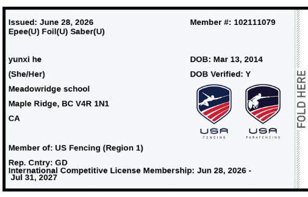
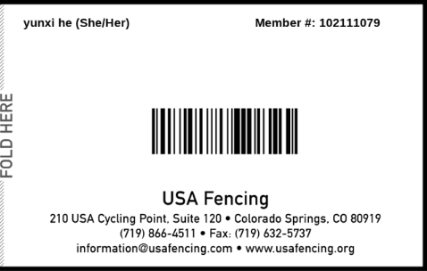

颜色维度 / Color by
年龄分组（2026-27 赛季）/ Age Groups
Table A（2 月 NAC 及之前）：Y12 2014-2017，Y14 2012-2015，Cadet 2010-2013，Junior 2007-2013。
Table B（2 月 NAC 之后）：Cadet 2011-2014，Junior 2008-2014。何云熙 2014 年生，年初主要打 Y12/Y14，2 月后可尝试 Cadet。
赛事级别 / Circuits
RYC：Regional Youth Circuit，地区赛，适合新手。
SYC：Super Youth Circuit，全国性积分赛，人最多。
RJCC：Regional Junior/Cadet Circuit，16-19 岁为主。
ROC/NAC：公开/全国成人赛，暂时不用考虑。
Region 1
USA Fencing Region 1 包括：WA, OR, MT, ID, WY。何云熙住在 Vancouver，按地理可归入 Region 1。离家最近赛事集中在 Bellevue/Seattle（WA）和 Tigard/Portland（OR）。
新积分规则（2026-27）/ New Points
2026-08-01 起 Cadet/Junior/DVI 使用统一积分表。SYC/RYC 给积分，但要参加 NAC/SJCC 需达到最低积分门槛。Y12/Y14 仍主要打 RYC/SYC 积累经验。
报名前准备 / Before Registering
1. 购买 USA Fencing 2026-27 Competitive Membership。
2. 上传 Age Verification（出生证明/护照）。
3. 确认赛事开放报名，RYC 通常提前 4-6 周，SYC 可能更早满员。
4. 报名分 Regular Fee 和 Late/Triple Fee，越晚报越贵。
我的 / My
Cathy Profile
Name: He Yunxi
Preferred Name: Cathy
Country: Grenada
Federation: USA Fencing (Region 1)
Birth: Mar 13, 2014 · 12 years old · Female
Height / Weight: 165 cm / 114.6 lb
Home: Vancouver, BC · Region 1 (WA, OR, MT, ID, WY)
Weapon: Foil
Hand: TBD
USA Fencing Membership
Member ID: 102111079
Membership Expires: Jul 31, 2027
Parents: Frank He & Natalie Wu
Club / Coach: TBD / TBD
Notes: None
Membership Photos


Tap to enlarge / 点击放大